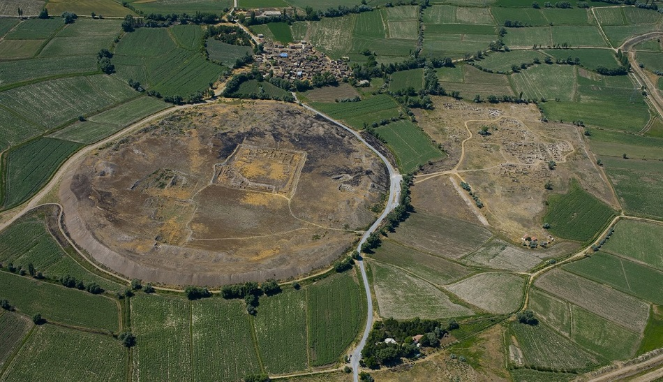
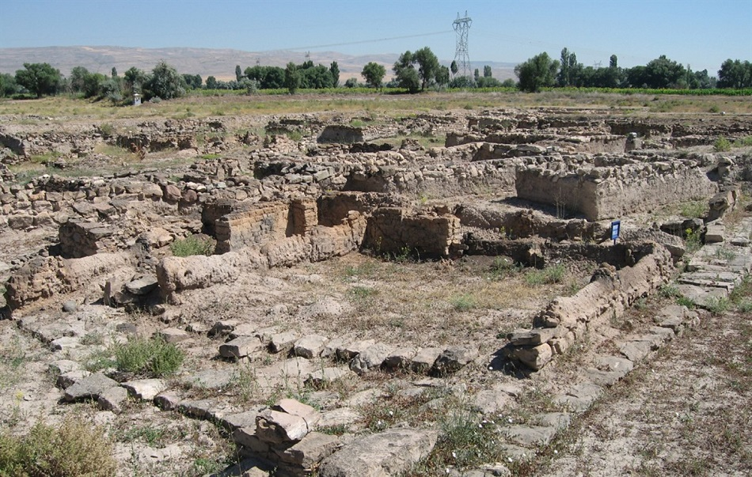
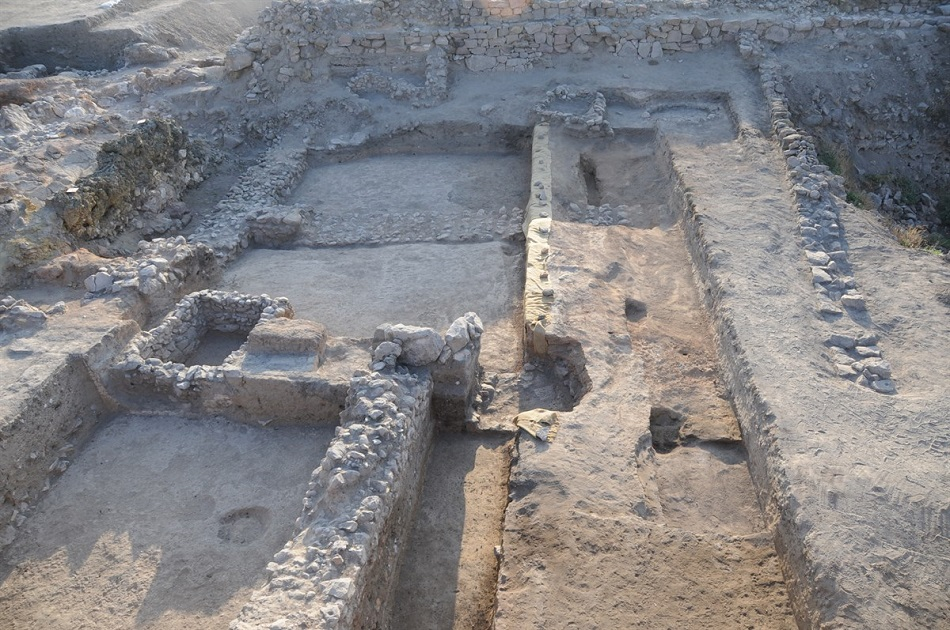
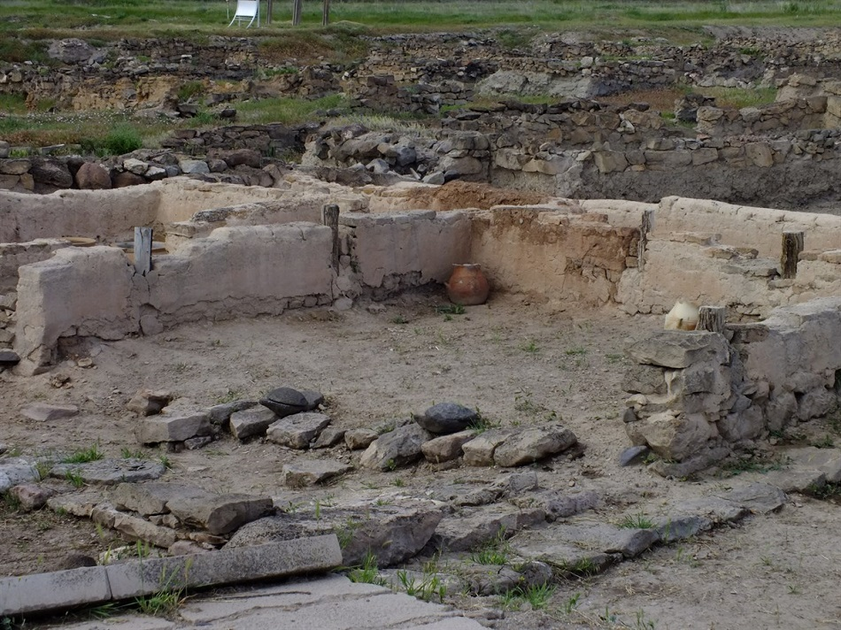

Kültepe
Eski Anadolu’nun ilk Uluslararası Ticaret Merkezi: Kültepe
Asur Krallığı, Yaklaşık olarak M.Ö. III. Binin sonlarında bağımsızlığını kazanmış ve hemen sonrasında Kral I. Erišum, Asur krallığının geleceğini sağlamak amacıyla, ticarette reformlar yapmış ve Anadolu ile sistemli bir ticareti başlatmıştır. Ticarette devlet tekeli kaldırılmış, serbest ticaretin aile fertleri ve onların kuracağı firmalar tarafından yapılmasına olanak sağlanmıştır. Böylelikle, M.Ö. II. Bin yılın ilk çeyreğinde, Anadolu ile K. Mezopotamya arasında çok kuvvetli ve yaygın bir ticaret ağı kurulmuştu. Bu ticaret sisteminin Anadolu’daki merkezi Kültepe-Kaniş idi ve Kaniş’e getirilen mallar, Anadolu içlerine kadar dağıtılmaktaydı.
Asurlular, kurdukları bu sistemi bir ticaret kolonisi anlamında geliştirmeyi başarmışlar, çoğu yerli krallıkların merkezinde veya önemli şehirlerde, liman anlamına gelen ve “karum” denilen birer ticaret merkezi/pazaryeri oluşturmuşlardır. Kültepe’de keşfedilen belgelerde, Asurlu tüccarların hem konakladığı hem de pazar kurduğu yaklaşık 40 civarında yerleşim adı kaydedilmiştir. Fakat günümüze kadar onlardan sadece Kaniş (Kültepe) ve Hattuš (Boğazköy) karum’larının yerleri kesin olarak tespit edilmiştir. Anadolu bu dönemde, “şehir devletleri” olarak yerli krallıklarla, bir tür feodal siyası sistemle yönetiliyordu. Asurluların yerli krallıklar üzerinde siyasi, idari veya askeri hiç bir etkinlik ve üstünlüğü yoktu. Yerliler ve Asurlular, karşılıklı ekonomik yararlar esasına göre anlaşmışlardır.
Kültepe, Orta Anadolu platosunun en yüksek dağı Erciyes’in hemen eteğinde oluşmuş olan ovanın ortasında yer alır. Kültepe eski adıyla Kaniš/Neša yalnız büyük bir ticaret merkezi veya Hitit devletinin ilk başşehri değil, aynı zamanda Anadolu’yu K. Suriye’ye, Asur aracılığı ile Mezopotamya’nın yüksek uygarlıklarına bağlamış büyük kültür merkezidir. Eski Mezopotamya kültürleri ile her zaman yakın ilişkiler kurmuş olan Malatya’yı İç Anadolu’ya bağlayan eski ticaret yolu Kültepe’den geçer. Kültepe, Anadolu’nun en çok zarar görmüş, en büyük höyüklerinden birisidir. Kazıbilimi tekniklerini ve yöntemlerini bilmeyen araştırmacılar; 1893-1894’de E. Chantre, 1906’da H. Winckler ve H. Grothe ve 1925’de B. Hrozny’nin sadece tablet veya eski eser bulmak için kazmış olmaları, bu tahribatın en önemli nedenleridir. Bu bilimsel olmayan kazılara ilaveten, köylülerin toprak almak için Eski Tunç Çağı tabakalarına kadar kazmaları da, Tepe’nin neredeyse 1/3’lük kısmını, tekrar araştırmaya imkân vermeyecek bir hale getirmiştir.
1948 yılında Türk Tarih Kurumu adına Ankara Üniversitesi Dil ve Tarih-Coğrafya Fakültesi Öğretim Üyesi Prof.Dr. Tahsin Özgüç başkanlığında başlayan bilimsel kazılar, kendisinden sonra, Prof.Dr. Fikri Kulakoğlu başkanlığındaki bir ekip tarafından sürdürülmektedir. Kültepe, iki kısımdan oluşmaktadır. Daire şeklindeki Tepe, yani Kaniş, 550 metre çapında olup, etrafındaki alüvyon ovadan 20 m yüksekliktedir. Tepeyi çeviren savunma sistemi nedeniyle, kenarları daha yüksek, ortası çukurdur. Aşağı Şehir, Tepenin etrafını olasılıkla yarım ay şeklinde kuzey, doğu ve güneyinden çevirmektedir. Tepenin batısı, eski çağlarda daha geniş bir alana yayılan Engir gölünün suları ve şimdilerde ise Engir bataklığı ile çevrilmektedir. 1955 yılından 1983 yılına kadar, Tepe’de aralıklı olarak sürdürülen kazılarda Eski Tunç Çağı I’in son safhasına kadar inilmiş ve 18 kültür katı tespit edilmiştir. Höyük toprağından kaynaklanan zor kazı koşulları nedeniyle kazılabilen en erken tabaka, yani 18. tabaka, Eski Tunç Çağı’nın I. evresine tarihlendirilmektedir. Kültepe’de Asur Ticaret Kolonileri Çağı’nı hazırlayan Eski Tunç Çağı’nın III. evresi, Mezopotamya ve Kuzey Suriye ile yakın ilişkilerin kurulduğu bir dönemdir. Bu dönemde Kültepe, anıtsal binalarla donatılmıştır. Yapılan kazılarda bulunan ithal seramik, silindir mühürler ve madeni eserler, mücevherat bu sıkı ilişkilerin belgeleridir.
Bu dönem ekonomisi maden ve tekstil üzerinedir. Asurlu tüccarların Anadolu’da kurdukları ticaret kolonilerinin de amacı, Anadolu’nun bu zenginliğinden faydalanmaktı. Kurulan ticaret sisteminin Anadolu’daki merkezi Kültepe Kaniş- Karum’u yani Kaniş pazar yeri, baş karum/baş pazar yeri idi. Asur’dan yola çıkan tüccarlar 200-250 yüklü eşekten oluşan kervanlarla Dicle, Habur vadilerini geçerek Orta Anadolu’ya erişiyorlardı. Kültepe’ye getirilen mallar, Anadolu içlerine kadar dağıtılmaktaydı. Bu ticaret, belli esaslara bağlı, kanunları ve düzenlemeleri olan bir ticaret idi. Esasen tüccarların, burada ticaret yapabilmeleri için, bu organizasyona dahil olmaları, kayıt yaptırmaları, aidat veya belli bir bedel ödemeleri gerekmekteydi. Buna rağmen kazandıkları bu hak, onlara, kuralsızca ticaret yapma hakkı vermemekteydi; kaçakçılık yapmayacaklar, gümrüksüz mal alıp satmayacaklar, her türlü vergilerini ödeyeceklerdi. Anadolu’nun ilk sistemli uluslararası ticaretinin kuralları da, Kültepe’de keşfedilen çivi yazılı tabletlerde karşımıza çıkmaktadır. Bu belgelerden, iki tarafın da birbirlerine karşı sorumlulukları ve haklarının kayıt altına alındığı anlaşılmaktadır. Asurlu tüccarların krallık bölgesinde ulaşımlarının ve güvenliklerinin korunma altına alınması karşılığında, onların Karum’da ikamet izinleri, ödeyecekleri vergilerin oranı yazılı olarak belirtilmiştir. Sarayın bazı lüks malların ticaretini yasaklaması veya Asurluların kendi hukuk sistemlerine göre yargılanması gibi hak ve kısıtlamalar detaylı olarak belirtilmiştir. Anlaşmalara aykırı davranan tüccarların cezalandırıldığı da yine bu tabletlerden öğrenilmektedir. Bütün bu ticaret organizasyonunun, düzenleyicisi, denetçisi, baş kurumu “bit karim” idi. Asurlu tüccarların Kaniş‘ deki merkez ofisi bit-karim idi. Bir ticaret odası vazifesi de gören Bit- arim aynı zamanda, verginin tahsil edildiği bir merkezdi. Tüccarlar burada, “köprü geçme“ ve “emanet bırakma“ vergisi ödemek zorundaydılar. Ayrıca mahkeme yetkisine sahipti, çünkü bu devirde, tüccarlar arasındaki olası davalar konusunda “hakem“ sıfatıyla hüküm vermekteydi. Esası maden ve tekstil ticareti üzerine kurulu bu ticaret düzeninde, Anadolu’da bulunmayan kalay, gümüş veya altın karşılığında Anadolu halkına satılmaktaydı. Asurluların Mezopotamya’da da bulunmayan kalayı nereden elde ettikleri bilinmiyor; olasılıkla daha doğudaki Türkmenistan veya Afganistan’dan ithal ediliyordu. Hammadde olarak Anadolu’dan satın alınan yün de, “Babil modasına uygun olarak Asur’da dokutulup, Anadolu insanına yine, gümüş ve altın karşılığında satılmaktaydı. Anadolu altın ve gümüşünün dışarı çıkarılması, ticareti yerlilerin aleyhine geliştiriyordu. Asurlular, ayrıca Anadolu’da bakır, deri, yün ve takı-boncuk ticareti de yapmaktaydılar. Anadolu’dan aldıkları bazı malları, örneğin ham olarak aldıkları bakırı temizledikten sonra yine yerli halka yüksek fiyata satıyorlardı. Kültepe’de şimdiye kadar keşfedilen metinler, Anadolu’da Asurlu olmayan tüccarların başka tüccarların da ticarete katıldığını göstermektedir. Bunların büyük bir grubunu Amoritlerin oluşturduğu anlaşılmaktadır. Kaniş’te Asurlu ve Anadolulu tüccarların yanında, çok az sayıda da olsa Hurri ve Amorit kökenli tüccarların varlığı anlaşılıyor. Bu çağda Asurlu tüccarlarla eşit ölçüde ticarete katılan yerli, zengin tüccarların varlığı da bilinmektedir.
